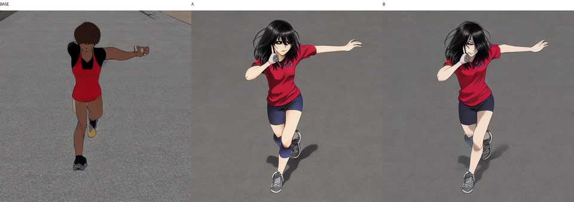

PIPELINE / SD1.5 LoRA
얼굴과 상반신을 가까이 보여주면 더 닮게 그릴까?
· 실제 실행 기록 · SD1.5 LoRA VR2.00 FullVsPatch
같은 인물의 원본 프레임만 보여준 A와 얼굴·어깨 및 상반신 크롭을 섞은 B를 비교했습니다. 두 LoRA 모두 기본 모델의 그림을 바꿨지만, B가 인물을 더 일관되게 재현했다는 증거는 아직 확인하지 못했습니다. 이번 검증은 테스트 캐릭터 SDtest_001로 진행했습니다. 럭시의 학습 결과는 아닙니다.
무엇을 비교했나요?
- BASE · LoRA 없음
- Stable Diffusion 1.5 기본 모델을 그대로 사용했습니다.
- A · 원본 프레임만
- 원본 프레임 400회. ‘원본’은 자르지 않은 입력이라는 뜻으로, 실제 전신 구도뿐 아니라 근접 구도도 포함합니다.
- B · 원본과 크롭 혼합
- 원본 300회, 얼굴·어깨 50회, 상반신 50회. 크롭에는 해당 구도를 설명하는 캡션을 붙였습니다.
A와 B는 같은 베이스에서 각각 200스텝을 학습했습니다. 100·200스텝에서 프롬프트 4개와 시드 42·123을 같은 설정으로 적용해 BASE·A·B 비교판 16개와 생성 이미지 48장을 남겼습니다. 이 비교로 크롭을 섞은 방식 전체를 평가할 수 있지만, 크롭 이미지와 캡션 중 어느 쪽의 영향인지는 따로 구분할 수 없습니다.
같은 시드로 달리기 장면을 만들었을 때

- 외형: A와 B에서 머리와 얼굴 표현이 달라졌습니다. 원본의 짧은 웨이브 단발, 카디건, 와이드 팬츠는 두 결과 모두 일관되게 재현하지 못했습니다.
- 동작: 달리기 시드 123에서는 A와 B 모두 동작을 읽을 수 있었고, BASE에서도 일부 나타났습니다. 위로 손 뻗기, 신발끈 묶기, 상반신으로 손 흔들기는 요청한 동작이나 한 사람 구도를 안정적으로 따르지 못했습니다.
- 판정 제외: 생성 이미지 48장 중 16장은 완전히 검었습니다. 100스텝에서 11장, 200스텝에서 5장입니다. 원인을 구분할 로그가 없어 검은 이미지는 외형과 동작 평가에서 제외했습니다. 200스텝 전신 6조건 중 세 결과를 모두 볼 수 있었던 것은 이 달리기 장면 하나였습니다.
다음에 확인할 것은?
학습을 더 돌리기 전에 이미 저장한 가중치로 확인합니다. 같은 조건에서 인물의 얼굴·헤어·의상과 요청한 동작을 따로 비교하고, 검은 출력은 판정 로그와 함께 별도로 기록합니다. 포즈 제어와 눈·손 부분 보정은 후속 실험이며, 이번 결과에 포함하지 않습니다.